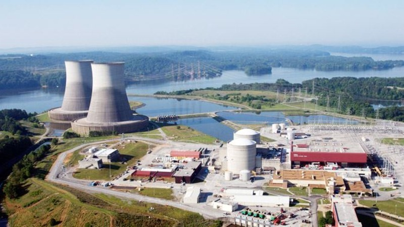
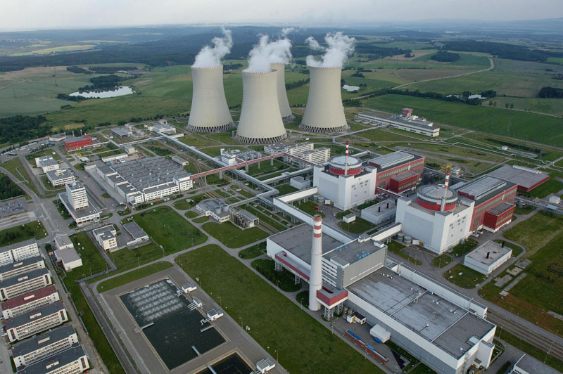
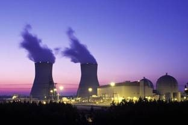

В 31 стране мира эксплуатируются 192 атомные электростанции с 450 энергоблоками общей электрической мощностью около 392 082 МВт.

Первая в мире атомная электростанция — Обнинская АЭС Россия, пуск в 1954 году.

Мощнейший в мире энергоблок — АЭС Сиво, Франция, 2 энергоблока по 1561 МВт каждый пуск в 1997, 1999.

После аварии на 4-м энергоблоке Чернобыльской АЭС 26 апреля 1986 года станция не прекратила работу. Второй энергоблок был остановлен в 1991 году, первый — в 1996, и только в 2000 сняли с эксплуатации третий блок.
Эвакуированные из города Припять работники станции были заселены во вновь построенный город Славутич.
Внимание ! Спасибо за внимание)
Антоненко Дмитрий
первый ядерный реактор
«Первенец» родом из США. В декабре 1942 года дал первый ток реактор, которому досталось имя его создателя — одного из величайших физиков столетия Э. Ферми. Три года спустя в Канаде обрела жизнь ядерная установка
ZEEP. «Бронза» досталась первому советскому реактору Ф-1, запущенному в конце 1946 года. Руководителем отечественного ядерного проекта стал И. В. Курчатов. Сегодня в мире успешно трудятся более 400 ядерных энергоблоков.
Типы ядерных реакторов
Их основное назначение – поддерживать контролируемую ядерную реакцию, производящую электроэнергию. На некоторых реакторах производятся изотопы. Если кратко, то они представляют собой устройства, в недрах которых
одни вещества превращаются в другие с выделением большого количества тепловой энергии. Это своеобразная «печь», где вместо традиционных видов топлива «сгорают» изотопы урана – U-235, U-238 и плутоний (Pu).
В
отличии, к примеру, от автомобиля, рассчитанного на несколько видов бензина, каждому виду радиоактивного топлива соответствует свой тип реактора. Их два – на медленных (с U-235) и быстрых (c U-238 и Pu) нейтронах.
На большинстве АЭС установлены реакторы на медленных нейтронах. Помимо АЭС, установки «трудятся» в исследовательских центрах, на атомных субмаринах и опреснителях морской воды.
Как работает реактор
Атомное «пламя» невидимо, так как процессы происходят на уровне деления ядер. В ходе цепной реакции тяжелые ядра распадаются на более мелкие фрагменты, которые, будучи в возбужденном состоянии, становятся источниками
нейтронов и прочих субатомных частиц. Но на этом процесс не заканчивается. Нейтроны продолжают «дробиться», в результате чего высвобождается большая энергия, то есть, происходит то, ради чего и строятся АЭС.Основная
задача персонала – поддержание цепной реакции с помощью управляющих стержней на постоянном, регулируемом уровне. В этом его главное отличие от атомной бомбы, где процесс ядерного распада неуправляем и протекает
стремительно, в виде мощнейшего взрыва.
Реакторы нового поколения
За последнее десятилетие Россия стала одним из лидеров мировой ядерной энергетики. На данный момент госкорпорация «Росатом» ведет строительство АЭС в 12 странах, где возводятся 34 энергоблока. Столь высокий спрос
– свидетельство высокого уровня современной российской ядерной техники. На очереди — реакторы нового 4-го поколения. Один из них – «Брест», разработка которого ведется в рамках проекта «Прорыв». Ныне действующие
системы разомкнутого цикла работают на низкообогащенном уране, после чего остается большое количество отработанного топлива, подлежащего захоронению, что требует огромных затрат. «Брест» — реактор на быстрых нейтронах
уникален замкнутым циклом.В нем отработанное топливо после соответствующей обработки в реакторе на быстрых нейтронах опять становится полноценным топливом, которое можно загружать обратно в ту же установку.«Брест»
отличает высокий уровень безопасности. Он никогда не «рванет» даже при самой серьезной аварии, очень экономичен и экологически безопасен, поскольку повторно пользуется своим «обновленным» ураном. Его также невозможно
использовать для наработки оружейного плутония, что открывает широчайшие перспективы по его экспорту.
Что произошло на Чернобыльской АЭС
Одна из основных причин катастрофы на Чернобыльской АЭС в апреле 1986 года – грубейшее нарушение эксплуатационных правил безопасности в процессе проведения регламентных работ на 4-м энергоблоке. Тогда из активной
зоны было одновременно выведено 203 графитовых стержня вместо 15, разрешенных регламентом. В итоге, начавшаяся неуправляемая цепная реакция завершилась тепловым взрывом и полным разрушением энергоблока.
Апрель. 1986 год.
ВВЭР-1200
ВВЭР-1200 – инновационный реактор поколения «3+» мощностью 1150 МВт. Благодаря своим уникальным техническим возможностям, он обладает практически абсолютной эксплуатационной безопасностью. Реактор в изобилии оснащен
системами пассивной безопасности, которые сработают даже в отсутствии электроснабжения в автоматическом режиме.Одна из них – система пассивного отведения тепла, которая автоматически активируется при полном обесточивании
реактора. На этот случай предусмотрены аварийные гидроемкости. При аномальном падении давления в первом контуре в реактор начинается подача большого количества воды, содержащей бор, которая гасит ядерную реакцию
и поглощает нейтроны.Еще одно ноу-хау находится в нижней части защитной оболочки – «ловушка» расплава. Если все же в результате аварии активная зона «потечет», «ловушка» не позволит разрушиться защитной оболочке
и предотвратит попадание радиоактивных продуктов в грунт.